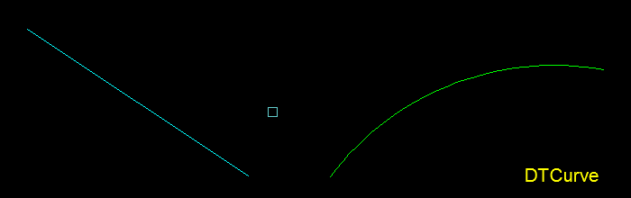
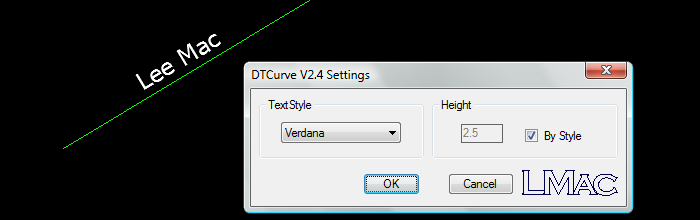
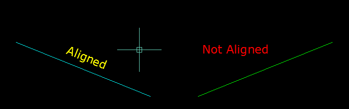

Align Text, MText or Attribute to Curve
This page is delivered for consistency purposes only, as part of the LeeMac sample module of DynALisp, which shows how DynALisp turns existing AutoLISP programs into a module. The program and its description are the work of Lee Mac, who keeps all the credit for them. The original page, with the latest version, is on Lee Mac's website: https://lee-mac.com/dtcurve.html
(With automatic realignment)
| Function Syntax | LM-DynamicTextCurveAlign – original syntax: DTCurve / DTRemove (see aliases) |
| Current Version | 2.9 |
| Compatible with AutoCAD for Mac? | No |
| Compatible with AutoCAD LT? | Yes |
| Original Page | lee-mac.com/dtcurve.html |
Program Description
This program will enable the user to dynamically align MText or DText to any Curve Object (Arc/Line/Polyline/Spline/Circle/Ellipse etc...), and the text will be automatically re-aligned to the object, should the object be modified. The user is prompted to either select existing text to align, or to specify a new text string to be created.
There are also additional options provided to help the user when aligning the text including:
| Key | Action |
|---|---|
| + / - | Controls Curve Offset |
| P / p | Toggles Perpendicularity |
| B / b | Toggles MText Background Mask |
| M / m | Mirror Text |
| S / s | Modify Text Style & Height |
Examples of Usage


Removing Alignment Associativity
Text/Object Associativity can be removed using the additional function: DTRemove. When using this function, a logo will appear to indicate which objects/text are associative.

Bundled program notes
;;-----------------------=={ Dynamic Text Curve Align }==----------------------;;
;; ;;
;; The Program will prompt the user to either Select existing text to align, ;;
;; or specify New Text. The user will then be prompted to select a curve, and ;;
;; the text specified/selected will be dynamically aligned to the selected ;;
;; curve. ;;
;; ;;
;; Additionally, the user can press +/- to alter the text offset from the curve ;;
;; and furthermore, toggle the text perpendicularity by pressing 'P' during ;;
;; text alignment. A Background Mask can be toggled by pressing 'B' when ;;
;; aligning MText. The Text can also be mirrored by pressing 'M' during text ;;
;; alignment. The TextStyle and Text Height may be altered by pressing 'S' when ;;
;; aligning text. ;;
;; ;;
;; DTRemove:- ;;
;; ------------ ;;
;; This function allows the user to remove Text/Object Associativity. Upon ;;
;; invoking this function, the user is prompted to select either Text or ;;
;; object. ;;
;; ;;
;; If the user picks an object, all text associativity with that object is ;;
;; removed. If the user picks a text object, the associativity between the ;;
;; text and the object that it was aligned with, is removed. ;;
;; ;;
;; The user can also press 'A' to clear all associativity within the drawing. ;;
;; ;;
;;-------------------------------------------------------------------------------;;
;; ;;
;; FUNCTION SYNTAX: DTCurve / DTRemove ;;
;; ;;
;; Notes:- ;;
;; ------------ ;;
;; Text and MText Justification will be changed to Middle Center Justification ;;
;; to allow text to be correctly aligned. ;;
;; ;;
;; Background Mask functionality can only be used when aligning MText. ;;
;; ;;
;;-------------------------------------------------------------------------------;;
;; ;;
;; Author: Lee Mac, Copyright © November 2009 - www.lee-mac.com ;;
;; ;;
;;-------------------------------------------------------------------------------;;
;; ;;
;; Version: ;;
;; ;;
;; 1.0: 06/11/2009 - First Release ;;
;;-------------------------------------------------------------------------------;;
;; 1.1: 13/11/2009 - Fixed bug that allowed text to aligned to multiple ;;
;; objects. ;;
;;-------------------------------------------------------------------------------;;
;; 1.2: 15/11/2009 - Added DTRemove to remove align associativity. ;;
;;-------------------------------------------------------------------------------;;
;; 1.3: 15/11/2009 - Added Ability to Align MText. ;;
;;-------------------------------------------------------------------------------;;
;; 1.4: 16/11/2009 - Added Ability to use a Background Mask, when aligning ;;
;; MText. ;;
;;-------------------------------------------------------------------------------;;
;; 1.5: 16/11/2009 - General Bug Fixes. ;;
;;-------------------------------------------------------------------------------;;
;; 1.6: 17/11/2009 - Updated code to work in all UCS. ;;
;;-------------------------------------------------------------------------------;;
;; 1.7: 17/11/2009 - Added Logo to DTRemove function. ;;
;;-------------------------------------------------------------------------------;;
;; 1.8: 17/11/2009 - Fixed Bug to allow correct text offset/perpendicularity ;;
;; setting when updating text by Reactor. ;;
;; - General Bug Fixes. ;;
;;-------------------------------------------------------------------------------;;
;; 1.9: 17/11/2009 - Fixed Text Rotation bug for Vertical lines. ;;
;;-------------------------------------------------------------------------------;;
;; 2.0: 17/11/2009 - General Bug Fixes. ;;
;; - Added ability for user to manually input offset ;;
;; distance. ;;
;;-------------------------------------------------------------------------------;;
;; 2.1: 19/11/2009 - DTRemove updated to remove all XData from object. ;;
;;-------------------------------------------------------------------------------;;
;; 2.2: 20/11/2009 - Added Mirror Text Option. ;;
;;-------------------------------------------------------------------------------;;
;; 2.3: 25/11/2009 - Added TextStyle/Height Dialog. ;;
;;-------------------------------------------------------------------------------;;
;; 2.4: 02/12/2009 - Fixed Dialog Bug. ;;
;;-------------------------------------------------------------------------------;;
;; 2.5: 03/12/2009 - Added Selection highlighting. ;;
;;-------------------------------------------------------------------------------;;
;; 2.6: 04/12/2009 - Upgraded DTRemove function to include option to Remove ;;
;; All associativity from objects. ;;
;;-------------------------------------------------------------------------------;;
;; 2.7: 07/12/2009 - Re-Structured xData Storage to allow text to be aligned ;;
;; to same part of object upon re-alignment ;;
;;-------------------------------------------------------------------------------;;
;; 2.8: 15/02/2010 - Fixed realignment bug when line length is less than ;;
;; text. ;;
;; - General Bug Fixes. ;;
;;-------------------------------------------------------------------------------;;
;; 2.9: 16/02/2010 - Updated Code Layout. ;;
;; - Added call to turn off reactor whilst main function is ;;
;; running. ;;
;;-------------------------------------------------------------------------------;;
Command Names And Aliases
As in every DynALisp module, each program of this sample module has one main command, named LM-*, and the original command names of Lee Mac's page are kept as its aliases: they run the same command, and can be added, renamed or removed in Dyl-Suite (saved in Resources\Aliases.csv). The rows marked ↳ are child commands of LM-DynamicTextCurveAlign: they are run by their alias, or picked from LM-DynamicTextCurveAlign when it lists them (their command is named Pst-*).
| Command | Aliases | Name |
|---|---|---|
| LM-DynamicTextCurveAlign | DTCURVE | Dynamic Text Curve Align |
| ↳ DTREMOVE | – | Dynamic Text Curve Remove |